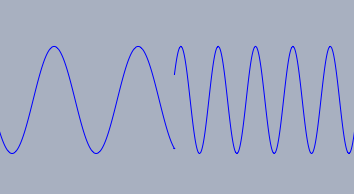
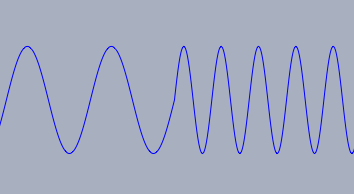
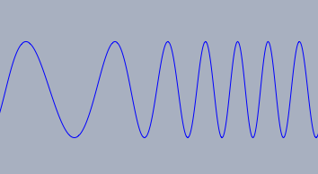

playfunction(...) 数式で定義した音を鳴らす。
playlist(...) 波形を指定したリストを与えて音を鳴らします。
playsin(...) 特定の周波数の音を鳴らします。 和音も指定できます。
playsin(<実数>) 関数について説明します。もっとも簡単な形は、周波数を与えるものです。たとえば playsin(440) は 440Hz の正弦波を1秒間鳴らします。次の簡単な音を鳴らすコードを試してみてください。:playsin(440); playsin(440*5/4); playsin(440*3/2);
1/3 に縮小すれば解決します。それには amp-><実数> 修飾子を使います。この修飾子はそれぞれの振幅を調整します。次のようにします。playsin(440,amp->1/3); playsin(440*5/4,amp->1/3); playsin(440*3/2,amp->1/3);
playsin が呼ばれると、既存の音に重ねて新しい音が出ます。もし playsin がi２番目に呼ばれるとき最初の音が鳴っていても２番目の音はかまわず鳴り始めます。そのため、ダイナミクスレンジが -1.0 から 1.0 の範囲を超えてしまうかも知れません。 line-><整数> はそのような状況を助けます。特に、 line->1 とすれば、一つの音しか扱えないラインに出力します。次のコードをごらん下さい。playsin(440,line->1); wait(200); playsin(550,line->1); wait(200); playsin(660,line->1);
line 修飾子によって解決される微妙な点がもう一つあります。ある音が他の音で置き得られるとき、２番目の音が最初の音との関連で理にかなった位置から始まるという保証はないのです。|
 |
 |
 |
| 位相がずれている | 位相がつながっている | なめらかにつながっている |
playsin(<real>)| 修飾子: | 値の型 | 効果: |
amp | 0.0 ... 1.0 | 全体の振幅 |
damp | <実数l> | 指数関数的に減衰する |
harmonics | <list~062 | 音のスペクトル |
duration | <実数> | 鳴らす速さ |
stop | <real> | durationと同じ |
line | 数または文字 | 音を関連付けるライン |
playsin の最も簡単は使い方は次の通りです。playsin(440)
playsin(440,damp->3,stop->5)
stop->5) で5秒間鳴るようになり、 (damp->3) で減衰します。また、寄り複雑な音を鳴らすには、harmonics修飾子を使います。 Harmonics修飾子は異なる音の振幅のリストで与えます。次のコードではplaysin(440,damp->3,stop->5,harmoics->[0.5,0.3,0.2,0.1])
playfunction(<funct>)| 修飾子: | 値の型 | 効果: |
amp | 0.0 ... 1.0 | 全体の振幅 |
damp | <実数l> | 指数関数的に減衰する |
start | <実数> | 開始位置 |
stop | <実数> | 終了位置 |
duration | <実数> | 鳴らす速さ |
mode | "append" or "replace" | 新しい音のハンドル |
line | 数または文字 | 音を関連付けるライン |
silent | <ブール値> | 発音しない |
export | <ブール値> | サンプルデータの書き出し |
playfunction(sin(440*x*pi*2))
playfunction(random(),damp->8)
start と stop を指定することによってサンプル音の開始と終了を決めることができます。この範囲は非常に短いこともあります。durationを使って、サンプル音を鳴らす時間を指定します。次のコードは1秒間の正弦波を鳴らします。playfunction(sin(1000*x*2*pi),stop->1/1000,duration->1)
sample=playfunction(sin(1000*x*2*pi),stop->1/1000,silent->true,export->true)
playwave 関数によって再生することができます。playwave(sample,duration->1)
playwave(<list>)duration 修飾子で指定できます。| 修飾子: | 値の型 | 効果: |
amp | 0.0 ... 1.0 | 全体の振幅 |
damp | <実数l> | 指数関数的に減衰する |
duration | <実数> | 鳴らす速さ |
line | 数または文字 | 音を関連付けるライン |
playwave で再生する３つのデータを作ります。 wait関数によって、３つの音が同じラインを使うのに時間差を設けます。 playwave 関数を使う前に、オーディオデータの作成は完了しています。sample0=apply(1..200,sin(#*2*pi/200)); sample1=apply(1..100,sin(#*2*pi/100)); sample2=apply(1..50,sin(#*2*pi/50)); playwave(sample0,duration->1,line->1); wait(400); playwave(sample1,duration->1,line->1); wait(400); playwave(sample2,duration->1,line->1);
stopsound()
Page last modified on Monday 29 of August, 2011 [07:52:46 UTC].
The original document is available at
http://doc.cinderella.de/tiki-index.php?page=Sampled-Audio%20FunctionsJ